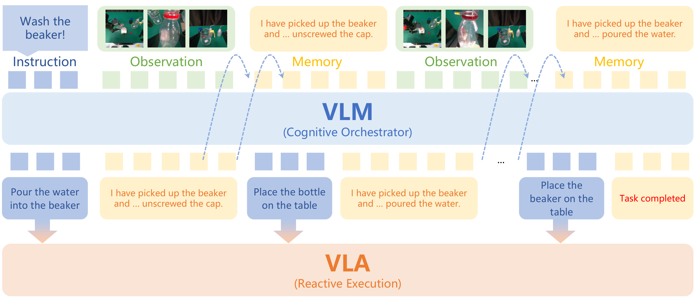
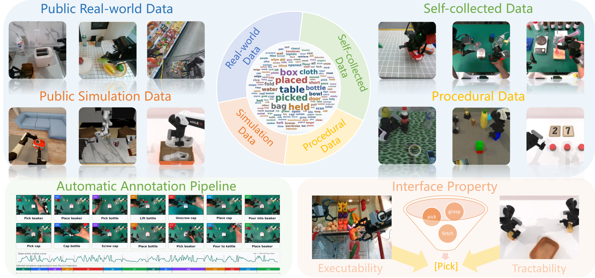
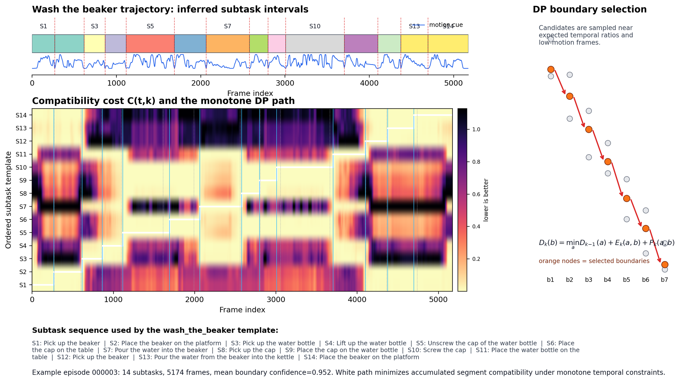
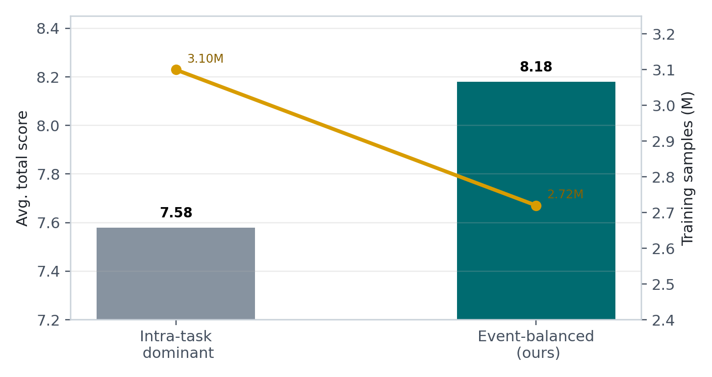
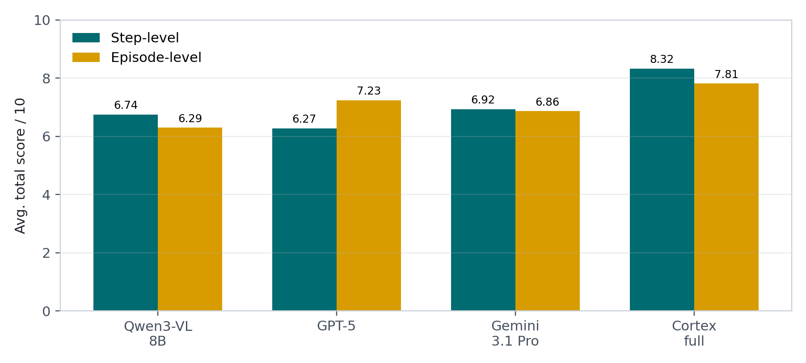
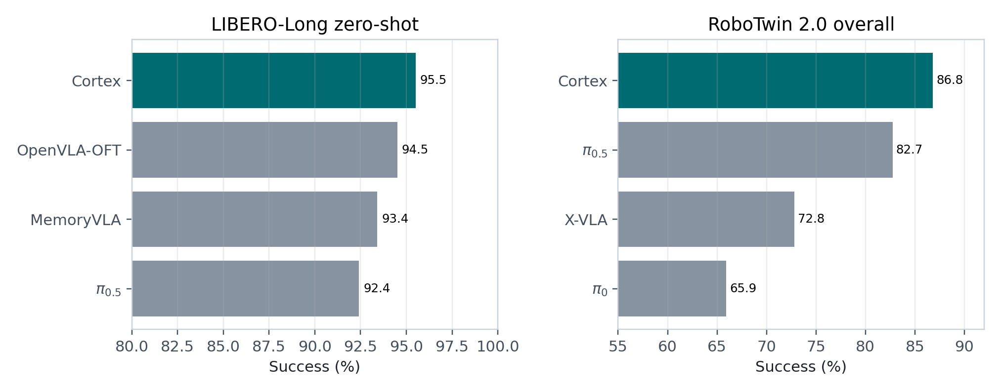
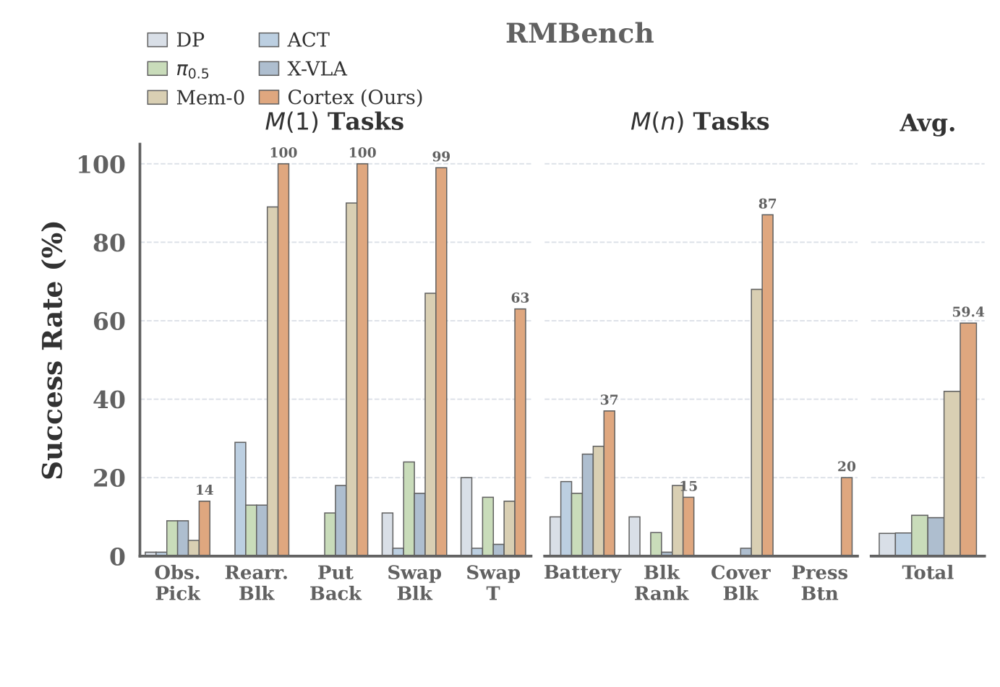
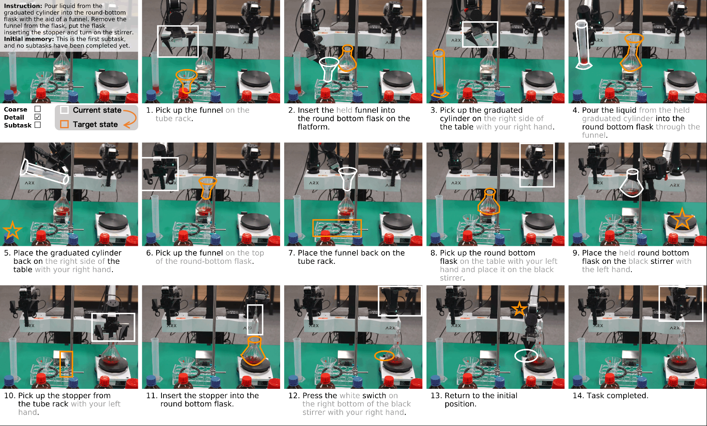
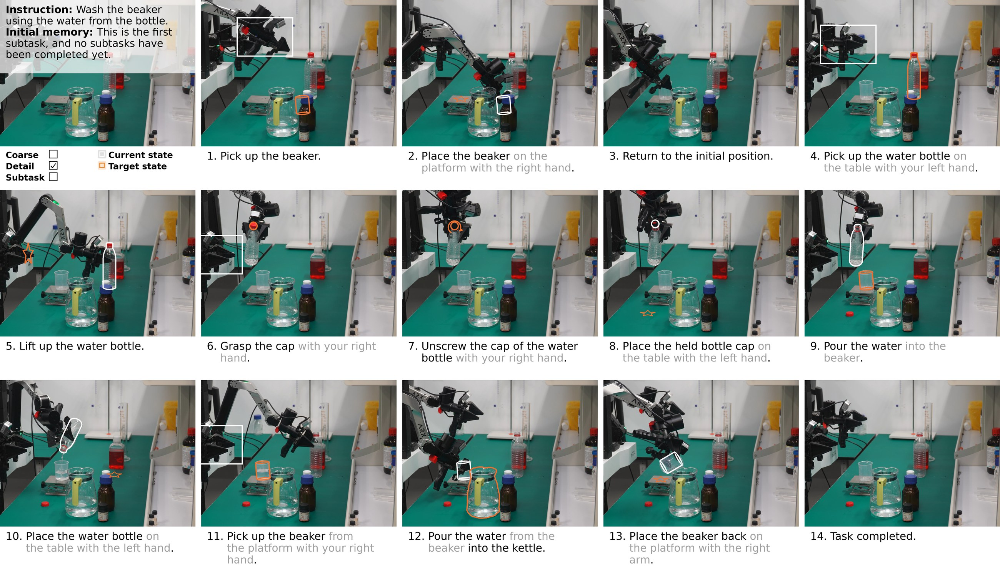
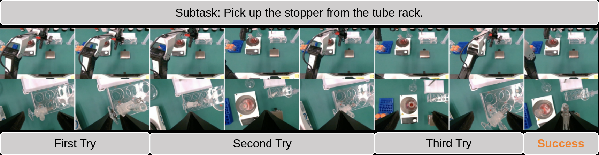

Overview
Long-horizon manipulation needs explicit progress, not only reactive action.
Recent Vision-Language-Action models are strong short-horizon controllers, but they are often Markovian: the current observation alone does not reliably encode which subtasks have already been completed. In multi-stage manipulation, this leads to repeated actions, premature transitions, and compounding errors.
Cortex introduces a bidirectionally aligned dual-system framework. A high-level VLM maintains compact semantic memory and predicts the current executable subtask, while a low-level VLA executes that localized command. The interface is standardized around canonical skills, spatial and numerical grounding, event-balanced training, and a deployment harness that verifies progress online.
Video
Supplementary video
The supplementary video demonstrates Cortex on long-horizon manipulation workflows, including real-world task execution and closed-loop progress verification.
Method
A dual-system interface that both planners and executors can trust.
Cortex treats the subtask-memory pair as the contract between System-2 planning and System-1 execution. The planner is constrained to executable skills, and the executor receives local, physically grounded commands instead of a brittle global task description.

Executable Skill Space
Free-form instructions are standardized into 32 canonical primitives, reducing kinematic hallucinations and making planner outputs routable by the VLA harness.
Tractable Metadata
Subtasks include object attributes, spatial relations, counts, and reachability priors so the high-level plan matches what the robot can physically execute.
Event-balanced Training
Training balances ongoing execution frames and boundary transition frames, teaching the planner when to hold a command and when to update memory.
Asynchronous Loop
System-2 runs at a slower reasoning rate while System-1 executes continuously, with harness logic for command mapping, holding, and timeout recovery.
Data
Scalable metadata construction for long-horizon manipulation.
Cortex builds a standardized interface from public real-world data, public simulation data, self-collected robot demonstrations, and procedural generation. The pipeline annotates subtask sequences, aligns boundaries, and injects execution priors.



Results
State-of-the-art long-horizon autonomy across planning and control.
Cortex improves both open-loop System-2 planning quality and closed-loop task execution, with the strongest gains on tasks that require memory, subtask transitions, and physical grounding.


LIBERO-Long Zero-shot
| Paradigm | Method | Success |
|---|---|---|
| End-to-End | π0 | 85.2 |
| End-to-End | π0.5 | 92.4 |
| End-to-End | MemoryVLA | 93.4 |
| End-to-End | OpenVLA-OFT | 94.5 |
| Agentic | Gemini-3.1-Pro | 91.0 |
| Agentic | Cortex | 95.5 |
RoboTwin 2.0
| Method | Short | Long | Overall |
|---|---|---|---|
| ACT | 33.20 | 24.50 | 29.70 |
| DP3 | 62.67 | 53.45 | 55.24 |
| π0 | 61.50 | 72.55 | 65.92 |
| X-VLA | 77.13 | 66.30 | 72.80 |
| π0.5 | 82.60 | 82.95 | 82.74 |
| Cortex | 86.00 | 88.00 | 86.80 |

Real World
Zero-shot deployment on complex physical workflows.
Cortex transfers to an ARX ACONE dual-arm setup and enables long-horizon chemistry and washing workflows by combining a generalist VLM planner with a short-horizon subtask-conditioned VLA executor.



20-trial Real-world Average
| Method | Chemical Task | Washing Task |
|---|---|---|
| π0.5 | 0% SR, 2.5 / 14 | 0% SR, 3.7 / 14 |
| πmem | 0% SR, 4.1 / 14 | 0% SR, 6.5 / 14 |
| Cortex | 65% SR, 11.0 / 14 | 55% SR, 10.5 / 14 |
| Human + πmemsub | 75% SR, 12.2 / 14 | 70% SR, 11.6 / 14 |
Citation
BibTeX
@misc{peng2026cortex,
title={Cortex: A Bidirectionally Aligned Embodied Agent Framework for Long-horizon Manipulation},
author={Jiaqi Peng and Xiqian Yu and Delin Feng and Yuqiang Yang and Wenzhe Cai and Jing Xiong and Ganlin Yang and Jinliang Zheng and Jiafei Cao and Xueyuan Wei and Jiangmiao Pang and Yuan Shen and Tai Wang},
year={2026},
url={https://steinate.github.io/cortex.github.io}
}